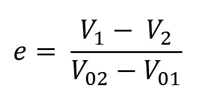
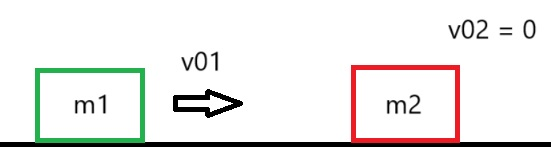
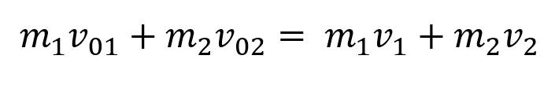
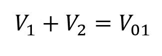
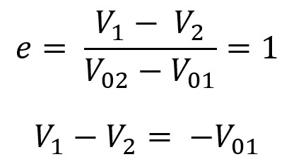
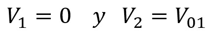
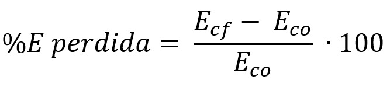
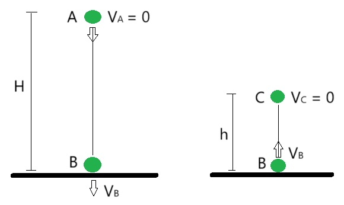
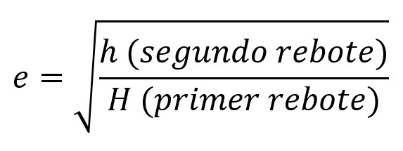

Colisión Elástica: Es un tipo de colisión en la que no hay pérdida de energía cinética total en el sistema. En una colisión elástica, los cuerpos que colisionan rebotan sin deformarse permanentemente y sin generar calor u otro tipo de energía. La energía cinética y el momento lineal se conservan en todo momento.
Energía Cinética: Es la energía que posee un objeto debido a su movimiento. En una colisión elástica, la energía cinética total del sistema antes y después del impacto se mantiene constante, lo que significa que la energía no se disipa en forma de calor, sonido o deformación permanente.
Momento Lineal (Impulso): Es el producto de la masa de un objeto y su velocidad. El momento lineal se conserva en cualquier tipo de colisión, incluyendo las elásticas. Esto significa que la cantidad total de movimiento en un sistema cerrado permanece constante antes y después de la colisión.
Coeficiente de Restitución: Es una medida de la elasticidad de una colisión entre dos cuerpos. Se define como la razón de la velocidad relativa de separación de los cuerpos después de la colisión a la velocidad relativa de acercamiento antes de la colisión. En una colisión perfectamente elástica, el coeficiente de restitución es igual a 1.
Según los valores del coeficiente de restitución "e" se puede clasificar los choques en:
Cuando el choque es elástico se conserva la energía cinética, en los otros casos hay pérdida de energía cinética, que se trasnforma en calor y/o energía de deformación.
Cuando dos bolas de billar colisionan, el choque es casi perfectamente elástico. La energía cinética total y el momento se conservan, permitiendo que las bolas se desplacen con velocidades calculables tras la colisión.
Al lanzar una pelota de goma contra una pared dura, la pelota rebota casi sin perder velocidad. La elasticidad del material permite que la energía cinética se conserve casi en su totalidad.
En pruebas de choques controlados con vehículos, algunos elementos están hechos para simular colisiones elásticas. Estos choques controlados ayudan a entender cómo se conserva la energía y cómo se distribuye durante el impacto.
Cuando una pelota de tenis se deja caer en una superficie dura, rebota conservando gran parte de su energía cinética, un comportamiento típico de las colisiones elásticas en materiales con alta elasticidad.
La relación del coeficiente de restitución "e" con los módulos de las velocidades de las partículas antes y después del choque se puede expresar de la siguiente forma:
Describamos un caso:
Dos cuerpos chocan frontalmente y elásticamente como se muestra en la figura:
La cantidad de momento lineal se conserva teniendo en cuenta la referencia
Si el cuerpo dos no se mueve y las masas son iguales:
Como es un choque elástico la energía se conserva
Resolviendo el sistema:
Por lo tanto, el cuerpo 1 le transmite toda la cantidad de movimiento al cuerpo 2 y se queda en reposo mientras el cuerpo 2 adquiere su misma velocidad.
El porcentaje de energía perdida se calcula con el error:
En cambio, cuando dejamos caer el cuerpo aplicando las mismas consideraciones obtenemos que el coeficiente de restitución se lo calcula con la siguiente fórmula:
En donde H es la altura de donde se soltó y h es la altura del primer rebote, cuando es el segundo rebote solo se cambia
En una colisión elástica, la energía cinética total del sistema (la suma de las energías cinéticas de todos los objetos involucrados) se conserva antes y después del choque. Esto significa que la energía cinética total antes del choque es igual a la energía cinética total después del choque.
El siguiente gráfico de líneas proporciona una representación visual de cómo cambia la energía cinética de cada objeto en una colisión elástica. Esto permite observar las diferencias en la energía cinética antes y después del choque para cada objeto.
Donde:
Si te ha quedado dudas sobre sobre las Colisiones Elásticas, puedes observar los siguientes videos: